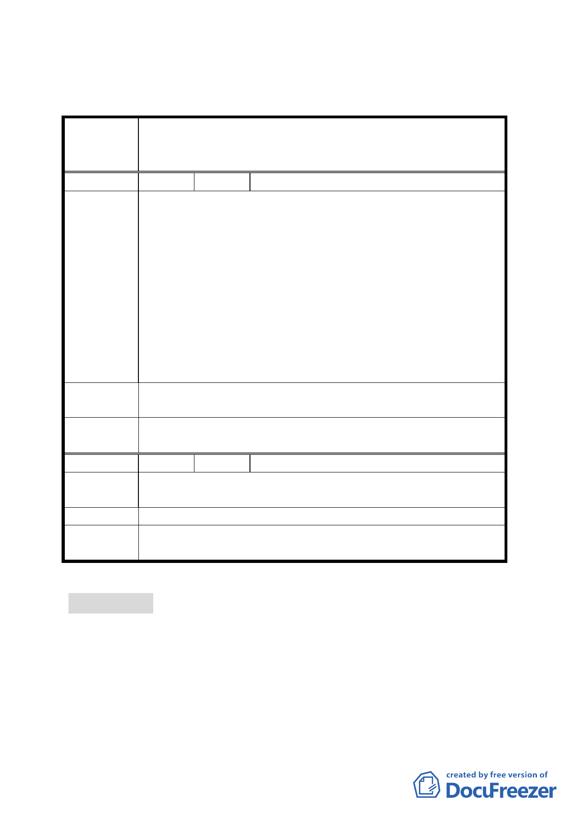

四、公民或團體所提意見審決如後附綜理表。
臺北市都市計畫委員會公民或團體陳所提意見綜理表
變更臺北市文山區木柵段三小段 666 地號等 34 筆土地
案 名 市場用地、停車場用地、道路用地、住宅區為商業區
主要計畫案
編 號 １ 陳情人 明義里高德四里長
一、強烈反對將閒置之安康市場及旁邊的安康停車場，設置
為 24 小時營業的寵物旅館，及大型綜合性寵物賣場。將
會嚴重影響當地市民之安寧及周邊商機，且看不出有什
麼經濟效益。即使是臨時性設置更不符經濟效益，且一
旦設置根本不可能是暫時性質，請神容易送神難，與當
陳情理由
初建議相背離。
二、自 88 年即提案將該址附近全盤規劃為大型商圈發展中
心，期待帶動木柵地區之繁榮願景。本提案歷經 3 任市
長，各單位就此召開無數次協調會，主辦單位不也已經
召商共同開發研議著手進行中，本里里民充滿期待有眉
目了可順利進行，到此絕不容許有任何節外生枝的提案。
建議辦法
請用原建議規劃木柵三小段 666 地號附近之市有地及周邊老
舊社區納入都市計畫更新，開發為大型商圈發展中心。
委員會決議
所提建議係涉土地使用管制規定，錄請市府於後續細部計畫
案內參考。
編 號 ２ 陳情人 湯朝淦、湯志蕙
陳
情
理
由
一、按前幾次開會決議，住宅區變更為 24 層商業大樓案。
二、堅決反對建寵物館，破壞住宅環境品質。
建 議 辦 法 按照前幾次會議決議辦理。
委員會決議
所提建議係涉土地使用管制規定，錄請市府於後續細部計畫
案內參考。
討論事項 二
案名：擬定臺北市中正區齊東街保存區及日式宿舍風貌保存特定
專用區細部計畫案
案情概要說明：
一、計畫範圍及面積：
計畫範圍分為二區，第一區為本市中正區齊東街、濟南路二
3